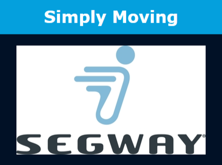
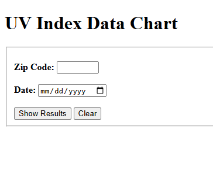
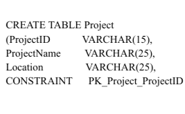

Portfolio of Sabrina Kabir
-

- 
-

-

- 
-

- 
This is an example of a webpage I completed using skills in both HTML and CSS. To look into the project more in depth, please click on the following link: WebPage Example
This is another example of a final project that I completed in class. For this example I have also used programming languages of both HTML and CSS. This project helps me demonstrate how I can link multiple pages within the same website. To explore the website, please click on the following link: Segway Project
This is a project I completed for a class assignment. In this project, I utilized my skills in Javascript to create a calculator with two different inputs for the number values. To use the calculator, please click on the following link: Calculator
In this currency value conversion project, I embedded AP calls to get real-time data on a specific currency converted to another currency at a given time. Currency values within my list includes US Dollar, Euro, Canadian Dollar, Singaporean Dollar, and Swiss Franc. To use the currency value history project, please click on the following link: Currency Value History
For this class final project, I was expected to get UV Index values based on an hourly for a specific date. One of the requirements of this project was to display values five days before the chosen date and values five days after the chosen date. In addition, I was expected to source my API calls from the OpenMeteo Website. This project was displayed in a chart format. To see the workings of this project more in-depth, please click on the following link: UV Index Project
An example of my database skills involves curating an Entity-Relationship (ER) model as part of a class assignment. This ER diagram represents the database view of a hospital-setting. Please click on the following link to see the full image of the ER model: Entity Relationship Diagram
In my both of my database classes, I had the opportunity to implement SQL coding into different database
systems. Two of these database systems include Oracle and the Microsoft SQL Server Database.
The following links will point to how I wrote SQL in the Microsoft SQL Server Database for an assignment.
The first example points to how I created tables and rows within the database. The second example
will showcase how I extracted information from a current database.
SQL code for MS-SQL Server (1)
SQL code for MS-SQL Server (2)